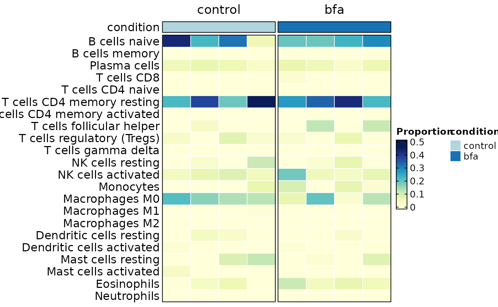
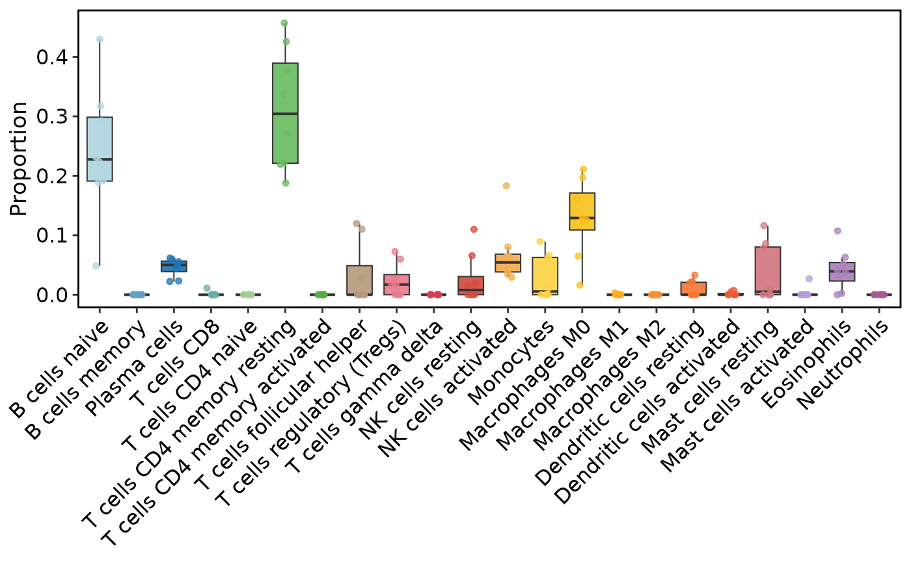

Estimate cell-type proportions from a bulk-like expression matrix stored in a
SummarizedExperiment object, using a Seurat reference.
Usage
RunDeconvolution(object, ...)
# S3 method for class 'SummarizedExperiment'
RunDeconvolution(
object,
reference = NULL,
method = c("MuSiC", "BisqueRNA", "BayesPrism", "CIBERSORT"),
group.by = NULL,
sample.by = NULL,
cellstate.by = NULL,
bulk_assay = "counts",
ref_assay = NULL,
ref_layer = "counts",
backend = c("cpp", "r"),
verbose = TRUE,
...
)Arguments
- object
A
SummarizedExperimentobject containing bulk-like counts.- ...
Additional parameters forwarded to the internal deconvolution backend.
- reference
A
Seuratreference object used to build cell-type profiles. Not required for"CIBERSORT".- method
Deconvolution method. One of
"MuSiC","BisqueRNA","BayesPrism", or"CIBERSORT".- group.by
Metadata column in
referencedefining reference cell types.- sample.by
Metadata column in
referencedefining biological sample / donor IDs. Used by therbackends ofMuSiCandBisqueRNA. IfNULL, SCOP will try to infer a suitable column automatically.- cellstate.by
Metadata column in
referencedefining cell states for therbackend ofBayesPrism. IfNULL,group.byis reused.- bulk_assay
Assay name in
objectused as the bulk counts matrix.- ref_assay
Assay name in
referenceused for the reference profiles.- ref_layer
Layer name in
referenceused for reference counts.- backend
Deconvolution engine backend.
"r"uses the original method package implementation."cpp"is reserved for native SCOP implementations when available.- verbose
Whether to print the message. Default is
TRUE.
Value
A SummarizedExperiment object with results stored in
S4Vectors::metadata(object)[["Deconvolution"]].
Examples
data(islet_bulk)
islet_bulk <- RunDeconvolution(
islet_bulk,
method = "CIBERSORT",
backend = "cpp",
perm = 0
)
#> ℹ [2026-07-02 09:36:47] Use 400 shared genes for CIBERSORT
DeconvolutionPlot(islet_bulk, plot_type = "bar")
 DeconvolutionPlot(
islet_bulk,
plot_type = "heatmap",
sample_annotation = "condition",
sample_split = "condition"
)
DeconvolutionPlot(
islet_bulk,
plot_type = "heatmap",
sample_annotation = "condition",
sample_split = "condition"
)

DeconvolutionPlot(islet_bulk, plot_type = "box")
